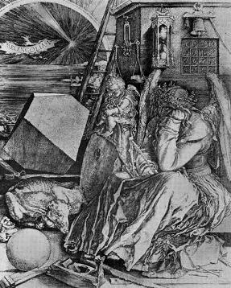
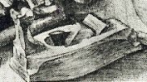
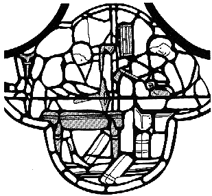

Détail et inversion

Figure 1
Dictionnaire raisonné du mobilier.
Viollet le Duc écrit n'avoir « pas trouvé d'exemples figurés du rabot avant le milieu du XVe siècle » mais la figure présentée est une copie exacte (quoique inversée) du rabot dessiné sur le bas de la célèbre gravure « La mélancolie » d'Albrecht Dürer. Il est à noter au passage que celle-ci date de 1514, soit le début du XVIe siècle...

Melencolia - Albrecht Dürer
|
 Détail et inversion |
Figure 1 |

Vitrail de la cathédrale de Chartres
Enfin, s'il est vrai que les représentations de rabots sont rarissimes, Viollet le Duc ne semble pas avoir connaissance du bas d'un des vitraux du XIIIe siècle de l'abside de la cathédrale de Chartres dédié à Saint Julien l'Hospitalier par la communauté des artisans du bois où est représenté un ouvrier tenant dans ses main un rabot.
Sources : Menuiserie, Évolution de la technique et des styles, Les cahiers du Collège des métiers, Édité par L'Association ouvrière des Compagnons du Devoir, Paris, 1988.